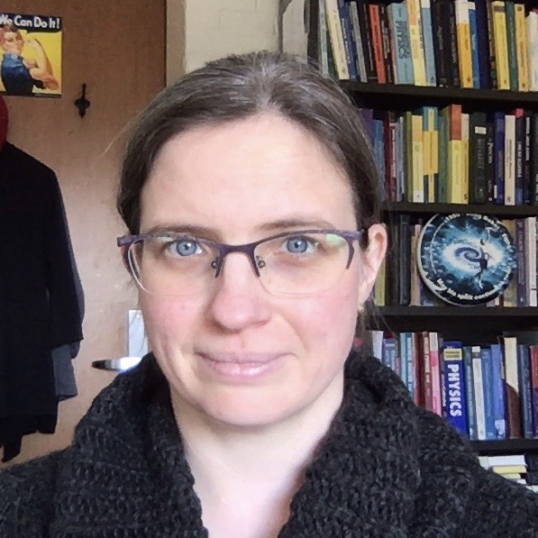

Contact Information
|
 Research InterestsMy research focuses on mathematical models, generally of social organisms, from the perspective of kinetic theory. At the discrete level, I design and implement interacting particle and agent-based models. I use these models in the context of fish migration, human gang rivalries, and gang territorial development, and I am now also working on models for pedestrian dynamics, particularly in stressful situations. I am interested in the kinetic and hydrodynamic limits of this type of model, especially if the model undergoes a phase transition as parameters are varied. I study these phase transitions at the microscopic, mesoscopic, and macroscopic scales. StudentsStudents:
Recent ActivitiesVirtual SIAM Dynamical Systems Conference, May 23-27, 2021 (Minisymposium Speaker) "Algorithmic Foundations of Programmable Matter: What Next?" A Virtual gathering in place of Dagstuhl workshop Programmable Matter, March 1-2, 2021 (Invited Participant) IPAM virtual workshop: Social Dynamics beyond Vehicle Autonomy, November 30-December 4, 2020 (Invited Participant) SIAM Conference on the Analysis of Partial Differential Equations: December 11-14, 2019 (Minisymposium Organizer and Speaker) CIRM workshop on Crowds: Models and Control, June 3-7, 2019 (Invited Participant) SIAM Dynamical Systems Conference, May 19-23, 2019 (Minisymposium Organizer and Speaker) Joint Mathematics Meetings, January 16-19, 2019 (Speaker in Special Session on Agent-Based Modeling in Biological and Social Systems) Canadian Mathematical Society Winter Meeting, December 7-10, 2018 (Special Sessions Speaker) SIAM Conference on the Life Sciences, August 6-9, 2018 (Minisymposium Organizer and Speaker) American Institute of Mathematics Workshop: Nonlocal differential equations in collective behavior, June 18-22, 2018 (Invited Participant) |